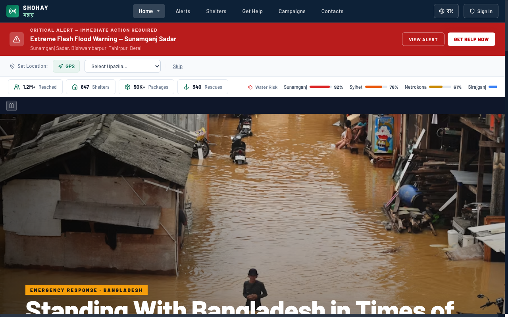
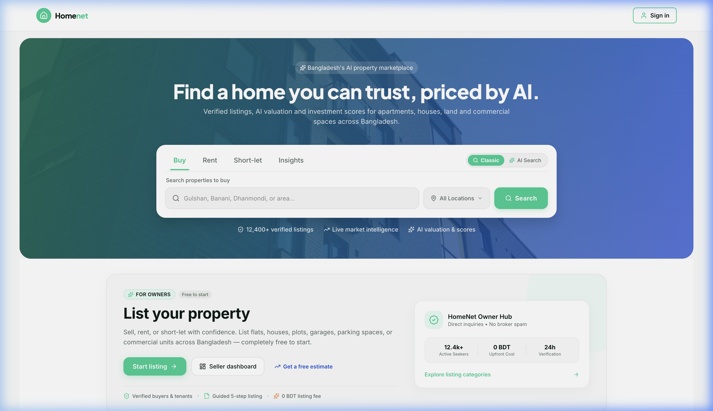
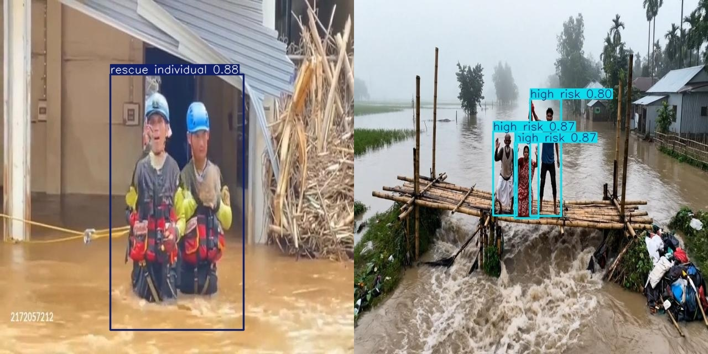
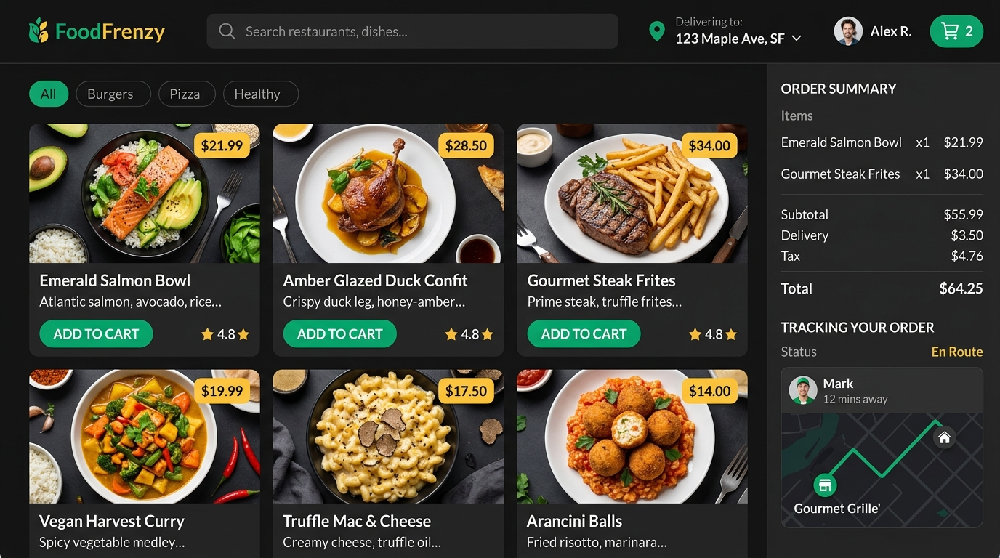
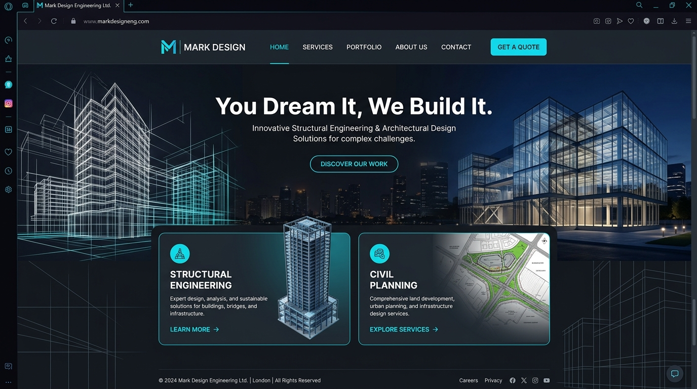

Final year B.Sc. in Computer Science & Engineering at United International University (UIU) and active Frontend Systems Developer Intern at Fazesoft. Architecting GPU-accelerated vision models (YOLOv12), responsive web platforms, and embedded cyber-physical telemetry systems.
Final year Computer Science & Engineering student at United International University (UIU) and active Frontend Developer Intern at Fazesoft.
Engineering robust Machine Learning and Computer Vision models alongside state-of-the-art Frontend Systems (React, TypeScript, Semantic HTML5, Modular CSS). Grounded in C/C++ algorithms with CAD mechanical design in Autodesk Fusion and interface design in Figma.
>> TELEMETRY_CONFIRMED: 6 RESEARCH PAPERS • 3 PRODUCTION PLATFORMS • 100+ ALGORITHMIC SOLVES
Designing custom YOLOv12 and multi-task learning pipelines for real-time risk-stratified UAV rescue and assistive banknote recognition.
Architecting accessible, micro-animated web consoles at Fazesoft using React, modern JavaScript, and zero-layout-thrashing CSS.
Developing dual-microcontroller architectures (Arduino + ESP32) with sensor telemetry, fail-safe firmware, and real-time cloud dispatch.
100+ solves across Codeforces and HackerRank paired with parametric 3D modeling in Autodesk Fusion for physical prototyping.
Fazesoft — Software Company
2024 — Present
Building production-grade, highly responsive web interfaces using React.js, JavaScript, and custom styling systems. Collaborating with cross-functional engineering teams on client delivery platforms including HomeNet BD.
United International University (UIU)
Final Year (Expected 2026)
Specializing in Algorithms, Data Structures, Machine Learning, Computer Vision, and Software Engineering. Active researcher with 6 co-authored and 1st-authored technical publications.
Dhaka Imperial College
Science | GPA: 5.00 / 5.00
Bangladesh Gas Fields School
Science | GPA: 5.00 / 5.00
Competitive programming, algorithmic data structures, and verified solves.

Real-time flood-relief coordination and emergency response platform for Bangladesh. Features public assistance tracking, live district flash-flood warnings, emergency shelter locator, UAV monitor, volunteer duty clock, and automated command center dispatch.

AI-assisted real estate web application developed at Fazesoft. Features automated AI property valuations, verified listings across Bangladesh, live market analytics, and an interactive owner listing portal.

Intelligent real-time disaster hazard evaluation and aerial rescue victim detection engine powered by YOLOv12. Pinpoints stranded victims to assist emergency operations with high accuracy and low latency.

Full-stack food delivery application built with Java, Spring Boot, and MySQL. Features customer authentication, interactive menu browsing, live order tracking, and administrative inventory management.

Full website engineering for a structural & architectural firm. Designed with responsive layouts, modern micro-interactions, dynamic service portfolios, and direct client consultation scheduling.
Dept. of Computer Science & Engineering • United International University (UIU)
An innovative IoT-assisted prayer mat integrating Force Sensitive Resistors (FSR), digital compass, 4-servo automated folding mechanism, and an 8-segment display digital tasbeeh counter. Features real-time prostration (Sijdah) counting, Qibla directional alignment, and an emergency buzzer alert system to maintain prayer discipline and provide health safety for users.
Dept. of Computer Science & Engineering • United International University (UIU)
A compact, 3-in-1 offline assistive mobile pipeline designed for individuals with severe visual impairments. Combines real-time Bangladeshi banknote detection (92% accuracy, 0.29s latency via CNN + SVM/RF), hand sign language translation (86% accuracy, 0.35s latency via MediaPipe 21 landmarks), and Tesseract OCR with n-gram ranking into an on-device text-to-speech (TTS) audio interface with zero internet dependency.
Dept. of Computer Science & Engineering • United International University (UIU)
A multi-protocol cyber-physical smart irrigation system based on a decoupled hybrid dual-microcontroller architecture. Isolates localized sensor acquisition and relay actuation on an Arduino Uno from the cloud networking stack on an ESP32. Features YL-69 soil volumetric water content polling, DHT11 microclimate telemetry, SSD1306 OLED visualization, Blynk Cloud dashboard, and Firebase synchronization with a fail-safe standalone continuum during network outages.
Dept. of Computer Science & Engineering • United International University (UIU)
An iterative Human-Computer Interaction (HCI) research study and mobile application concept for public safety incident reporting and situational awareness. Features citizen evidence submission, live emergency alerts, safety quiz modules, role-based responder workflows, and think-aloud evaluation benchmarked against Nielsen's heuristics and the System Usability Scale (SUS) to streamline coordination between citizens and law enforcement.
Dept. of Computer Science & Engineering • United International University (UIU)
Introduces a self-collected dataset of 4,260 smartphone images across 7 Bangladeshi banknote denominations (BDT 10–1000) under diverse real-world lighting and wear conditions. Formulates a hard parameter-sharing Multi-Task Learning (MTL) architecture using a shared MobileNetV3-Large backbone with task-specific heads. Achieves 97.11% denomination accuracy and 78.55% condition macro-F1 (Fresh, Mint, Rare) with class-balanced focal loss while slashing trainable parameters by 87% (3.60M vs 27.73M baseline) for efficient mobile edge deployment.
Dept. of Computer Science & Engineering • United International University (UIU)
Recasts the flood-victim detection problem as a five-class, risk-aware detection and operational dispatch challenge (Critical, High, Medium, Low Risk, and Rescue Individual) using a custom dataset of 7,460 flood scene images. Employs a state-of-the-art YOLOv12n detector (0.918 precision, 0.908 recall, 0.934 mAP@0.5) benchmarking across YOLO v5s to v12n, paired with the novel ResQtech Dispatch Algorithm (RDA) to convert per-frame bounding box densities into accurate responder team counts and dynamic alert levels, and deployed inside the real-world Shohay emergency command center.
Capturing life's beautiful moments through the lens, exploring street and landscape photography.
View on FacebookStaying disciplined and maintaining physical fortitude through regular strength training and progressive overload.
Exploring immersive competitive and story-driven game systems that challenge strategic real-time decisions.
Exploring new places, terrains, cultures, and cuisines — gathering inspiration from every expedition.
Playing cricket and football for tactical teamwork and athletic focus on the field.
Building experimental autonomous systems, vision pipelines, and developer tooling during off-hours.
I am actively open to high-impact software engineering, machine learning, and autonomous systems opportunities. Whether you have a project collaboration, technical inquiry, or wish to connect — let's build the future together.
Transmit Message